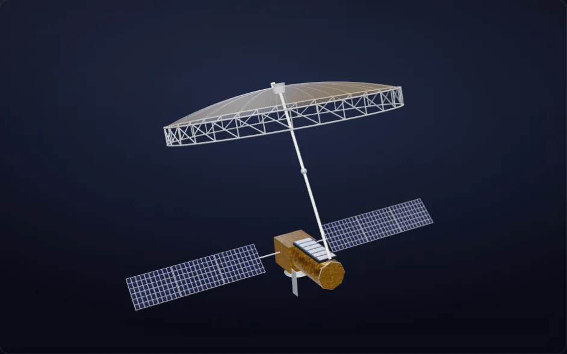

Le problème
Pendant un grand feu, la fumée et les nuages cachent le sol aux satellites optiques. Les bilans officiels arrivent ensuite avec un seul chiffre : une surface. Ils ne disent pas où le feu a frappé le plus fort, ni si la forêt repart.
En dix jours, deux feux records ont dévoré près de 1 000 km² de forêt en Espagne et en France. Au Maroc, le Moyen Atlas a brûlé aussi. Pendant ce temps, NISAR (NASA–ISRO) passait au-dessus tous les 12 jours, de jour comme de nuit.
Son radar en bande L (24 cm) traverse la fumée et « touche » les branches et les troncs. Quand une forêt brûle, ce signal s'effondre. NABD mesure cette chute pixel par pixel : où le feu est passé, avec quelle violence, et si la forêt repart.
NISAR à 747 km d'altitude, vue reconstituée. Il repasse au-dessus de chaque forêt tous les 12 jours.
Pendant un grand feu, la fumée et les nuages cachent le sol aux satellites optiques. Les bilans officiels arrivent ensuite avec un seul chiffre : une surface. Ils ne disent pas où le feu a frappé le plus fort, ni si la forêt repart.
Cinq scripts Python ouverts cherchent les passages, ne téléchargent que la fenêtre du feu, mesurent la chute du signal radar et la croisent avec l'optique. Le site rejoue chaque passage : on clique un point et on lit son histoire.
Chaque point est un passage de NISAR. La courbe montre le signal HV de la zone brûlée moins celui de la forêt intacte voisine, ce qui annule les effets de saison et d'orbite. Avant le feu, elle reste à plat près de 0. Pendant le feu (bande orange), elle plonge. Après, on voit si la forêt repart.
Surface brûlée mesurée automatiquement par NISAR (périmètre de la cicatrice), comparée au bilan des autorités. Chaque barre est en pourcentage du chiffre officiel. Le radar bande L voit surtout le bois : les herbes et les broussailles brûlées changent peu son signal.
OPERA DIST-ALERT repère la végétation perdue avec Landsat et Sentinel-2. Le radar voit à travers les nuages et la fumée ; l'optique non, mais elle confirme.
Faible : −1 à −2,5 dB · Modérée : −2,5 à −4 dB · Forte : plus de −4 dB, soit 2,5 fois moins de signal.
Ce qui apparaissait déjà « éteint » sur un passage pendant le feu, puis le reste, vu au premier passage après le feu. Il n'y a pas d'image NISAR du 27 juillet au 10 août.
Produit GCOV bande L, HH et HV, corrigé du relief. Seule la fenêtre de chaque feu est découpée côté NASA : quelques Mo au lieu de 6 Go par image. Les cadres voisins d'un même passage sont assemblés.
Chaque passage est d'abord calé sur la partie non brûlée de l'image (cela efface les jours de pluie et les sauts d'étalonnage). Pour chaque orbite, ΔHV = médiane des passages de 10 à 120 jours après le feu − médiane des passages des 75 jours d'avant. La chute continue de se creuser pendant des semaines : il faut regarder longtemps après. Les orbites sont moyennées.
Une zone est comptée comme brûlée si elle portait de la végétation (HV > −22 dB) et que son HV lissé chute de plus de 1 dB. On ne garde que les taches reliées au feu (pas les coupes de bois ou les récoltes ailleurs). Le périmètre referme les trous de moins de 200 m, comme les bilans officiels.
On suit, passage par passage, la cicatrice comparée à la forêt témoin. Les surfaces sont comparées aux bilans officiels. Les passages qui couvrent moins de 60 % de la zone sont signalés.
Faites tourner le satellite et sa fusée à la souris ou au doigt : ce sont les modèles de l'intro.

Glisser pour tourner, molette ou pincement pour zoomer.
Modèle détaillé : « NISAR Satellite ISRO - NASA Joint Mission » par MechLab3D, hébergé par Sketchfab. Il se charge seulement si vous cliquez.
Premier vol d'une GSLV vers une orbite héliosynchrone. Modèle 3D NABD, fait à la main d'après la configuration publiée par l'ISRO.
Toutes viennent du catalogue de la NASA (Earthdata, ASF). Comptage du 14 novembre 2026 : relancez 01_search.py pour le chiffre à jour.